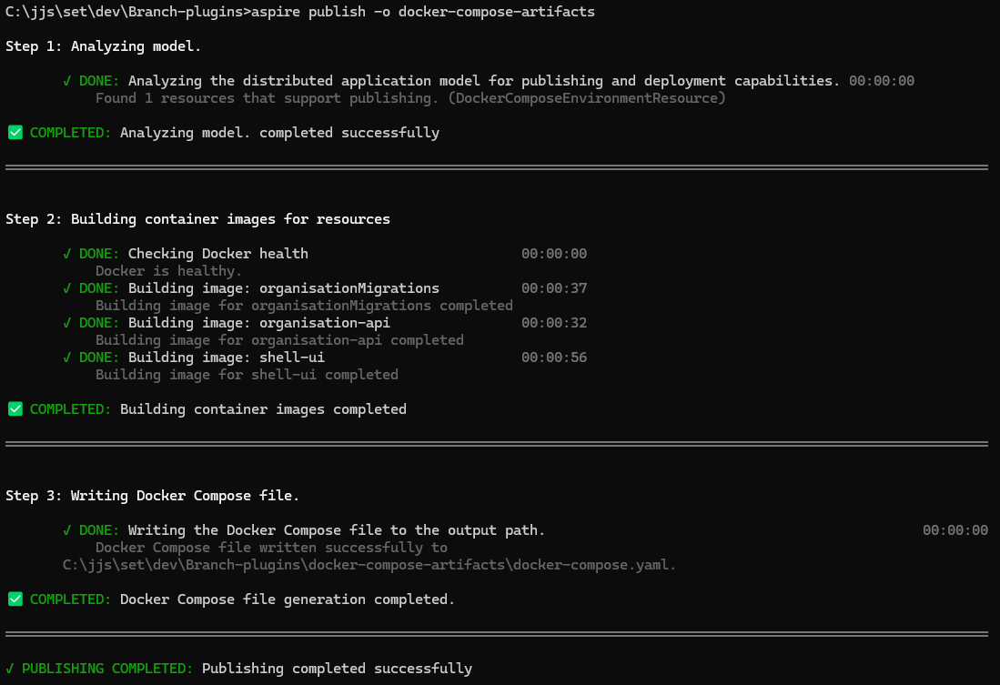

Using .NET Aspire With the Docker Publisher¶
.NET Aspire is one of the most exciting additions to the .NET ecosystem in years. It delivers a modern, cloud-native development experience with strong defaults, seamless integration, and a focus on developer productivity.
A highly requested feature is the ability to publish directly to Docker Compose. With the latest preview, this feature is available, and in this guide, I’ll show you how it works.
We’ll walk through using Aspire’s Docker Publisher to spin up a demo app that includes:
- A SQL Server database
- A migration service
- A minimal .NET API
- A Shell UI
Everything runs under Docker Compose, and Aspire generates the required configuration directly from C# code. We’ll cover setup, what happens behind the scenes, and how to take this configuration to a VPS or cloud host.
The Shell App & Organisation Plugin¶
The demo app is a typical plugin for the Shell app to highlight how Aspire handles service orchestration:
- SQL Server – used for data storage
- API project – a minimal Web API
- Shell – runs the UI
Normally, you’d connect these services manually, manage configuration files, define environment variables, and write a docker-compose.yml file from scratch.
With Aspire, all of this is declared in C# inside the AppHost project:
var builder = DistributedApplication.CreateBuilder(args);
// Enables Docker publisher
builder.AddDockerComposeEnvironment("branch-environment");
var sqlServer = builder
.AddSqlServer("branch-sql-server", builder.CreateResourceBuilder(new ParameterResource("password", _ => "<My-1st-strong password>")))
.WithDataVolume("branch-sql-server-volume")
.WithLifetime(ContainerLifetime.Persistent);
var organisationDb = sqlServer.AddDatabase("OrganisationDB", "Organisations");
var organisationMigrations = builder.AddProject<Projects.JJs_OrganisationManagement_MigrationService>("organisationMigrations")
.WithParentRelationship(organisationDb).WithReference(organisationDb).WaitFor(organisationDb);
var organisationApi = builder.AddProject<Projects.JJs_OrganisationManagement_Api>("organisation-api")
.WithReference(organisationDb).WaitForCompletion(organisationMigrations)
.WithSwagger().WithReDoc().WithScalar();
builder.AddProject<Projects.Shell>("shell-ui")
WithReference(organisationApi).WaitFor(organisationApi);
builder.Build().Run();
This configuration provides a development environment where Aspire runs SQL Server in a container and wires up your API automatically.
The key call here is AddDockerComposeEnvironment, which enables the Docker publisher. This feature is available in the Aspire.Hosting.Docker NuGet package (currently in preview):
Installing the Aspire CLI¶
To publish your app to Docker Compose, install the Aspire CLI:
Then publish your app:
This command scans your solution for Aspire projects and generates both a docker-compose.yml and a .env file in the specified output directory docker-compose-artifacts.

The Docker Compose File¶
Let's examine the result:
services:
branch-environment-dashboard:
image: "mcr.microsoft.com/dotnet/nightly/aspire-dashboard:latest"
expose:
- "18888"
- "18889"
networks:
- "aspire"
restart: "always"
branch-sql-server:
image: "mcr.microsoft.com/mssql/server:2022-latest"
environment:
ACCEPT_EULA: "Y"
MSSQL_SA_PASSWORD: "${PASSWORD}"
expose:
- "1433"
volumes:
- type: "volume"
target: "/var/opt/mssql"
source: "branch-sql-server-volume"
read_only: false
networks:
- "aspire"
organisationmigrations:
image: "${ORGANISATIONMIGRATIONS_IMAGE}"
environment:
OTEL_DOTNET_EXPERIMENTAL_OTLP_EMIT_EXCEPTION_LOG_ATTRIBUTES: "true"
OTEL_DOTNET_EXPERIMENTAL_OTLP_EMIT_EVENT_LOG_ATTRIBUTES: "true"
OTEL_DOTNET_EXPERIMENTAL_OTLP_RETRY: "in_memory"
ConnectionStrings__OrganisationDB: "Server=branch-sql-server,1433;User ID=sa;Password=${PASSWORD};TrustServerCertificate=true;Initial Catalog=Organisations"
OTEL_EXPORTER_OTLP_ENDPOINT: "http://branch-environment-dashboard:18889"
OTEL_EXPORTER_OTLP_PROTOCOL: "grpc"
OTEL_SERVICE_NAME: "organisationMigrations"
depends_on:
branch-sql-server:
condition: "service_started"
networks:
- "aspire"
organisation-api:
image: "${ORGANISATION_API_IMAGE}"
environment:
OTEL_DOTNET_EXPERIMENTAL_OTLP_EMIT_EXCEPTION_LOG_ATTRIBUTES: "true"
OTEL_DOTNET_EXPERIMENTAL_OTLP_EMIT_EVENT_LOG_ATTRIBUTES: "true"
OTEL_DOTNET_EXPERIMENTAL_OTLP_RETRY: "in_memory"
ASPNETCORE_FORWARDEDHEADERS_ENABLED: "true"
HTTP_PORTS: "${ORGANISATION_API_PORT}"
ConnectionStrings__OrganisationDB: "Server=branch-sql-server,1433;User ID=sa;Password=${PASSWORD};TrustServerCertificate=true;Initial Catalog=Organisations"
OTEL_EXPORTER_OTLP_ENDPOINT: "http://branch-environment-dashboard:18889"
OTEL_EXPORTER_OTLP_PROTOCOL: "grpc"
OTEL_SERVICE_NAME: "organisation-api"
expose:
- "${ORGANISATION_API_PORT}"
depends_on:
organisationmigrations:
condition: "service_completed_successfully"
networks:
- "aspire"
shell-ui:
image: "${SHELL_UI_IMAGE}"
environment:
OTEL_DOTNET_EXPERIMENTAL_OTLP_EMIT_EXCEPTION_LOG_ATTRIBUTES: "true"
OTEL_DOTNET_EXPERIMENTAL_OTLP_EMIT_EVENT_LOG_ATTRIBUTES: "true"
OTEL_DOTNET_EXPERIMENTAL_OTLP_RETRY: "in_memory"
ASPNETCORE_FORWARDEDHEADERS_ENABLED: "true"
HTTP_PORTS: "${SHELL_UI_PORT}"
OTEL_EXPORTER_OTLP_ENDPOINT: "http://branch-environment-dashboard:18889"
OTEL_EXPORTER_OTLP_PROTOCOL: "grpc"
OTEL_SERVICE_NAME: "shell-ui"
expose:
- "${SHELL_UI_PORT}"
depends_on:
organisation-api:
condition: "service_started"
networks:
- "aspire"
networks:
aspire:
driver: "bridge"
volumes:
branch-sql-server-volume:
driver: "local"
This docker-compose file is generated from the C# code we added to the AppHost/Program.cs file. It defines all services, images, environment variables, ports, and dependencies..
The .env file¶
Aspire also generates an .env file with configuration values:
# Default container port for organisation-api
ORGANISATION_API_PORT=8080
# Default container port for shell-ui
SHELL_UI_PORT=8080
# Parameter password
PASSWORD=<My-1st-strong password>
# Container image name for organisationMigrations
ORGANISATIONMIGRATIONS_IMAGE=organisationMigrations:latest
# Container image name for organisation-api
ORGANISATION_API_IMAGE=organisation-api:latest
# Container image name for shell-ui
SHELL_UI_IMAGE=shell-ui:latest
This file contains:
- Default container ports
- Database credentials
- Container image names
Update placeholders (such as passwords) with real values. For the images, you can build and tag them yourself, or pull from a registry.
Publishing and Running on a Virtual Private Server (VPS)¶
Aspire doesn't deploy the app for you, but it gives you everything you need.
Once the Compose file is ready, deployment to a VPS is straightforward:
- Copy the artifacts to your server using (
scporgit). - Remote into the VPS.
- Run
docker compose up -dinside the artifact directory.
Make sure Docker and Docker Compose are installed on the server.
For external access, configure a reverse proxy (e.g., YARP, NGINX, or Caddy) and secure endpoints with HTTPS.
Wrapping Up¶
Using .NET Aspire with Docker Compose creates a smooth developer experience and simplifies full-stack app deployment.
- Define everything in C#
- Test locally
- Publish with a single command
No need to hand-craft Compose files or juggle infrastructure manually. Aspire keeps you cloud-agnostic, so you can move between environments with ease.
I’m genuinely excited about where this is heading — the future of cloud-native development in .NET looks bright with Aspire.
Next Steps¶
If you’d like to take this further, here are some ideas:
- 🔗 Explore the official .NET Aspire documentation for the latest updates.
- ⚙️ Integrate Aspire publishing into a CI/CD pipeline (e.g., GitHub Actions, Azure DevOps, or GitLab).
- ☁️ Try deploying your Compose setup to a managed environment like Azure Container Apps, AWS ECS, or Fly.io.
- 🔒 Add a reverse proxy and HTTPS support with YARP, NGINX, or Traefik.
- 📦 Experiment with other services (Redis, RabbitMQ, PostgreSQL) by declaring them in C#.
Visual Overview¶
Here’s a simple diagram of the workflow from Aspire to deployment:
flowchart TD
A[AppHost in C#] --> B[Aspire CLI Publish]
B --> C[Docker Compose Artifacts]
C --> D[Local Development]
C --> E[VPS / Cloud Server]
E --> F[Reverse Proxy + HTTPS]This illustrates how Aspire turns your C# configuration into Docker artifacts that can be run locally or deployed remotely.